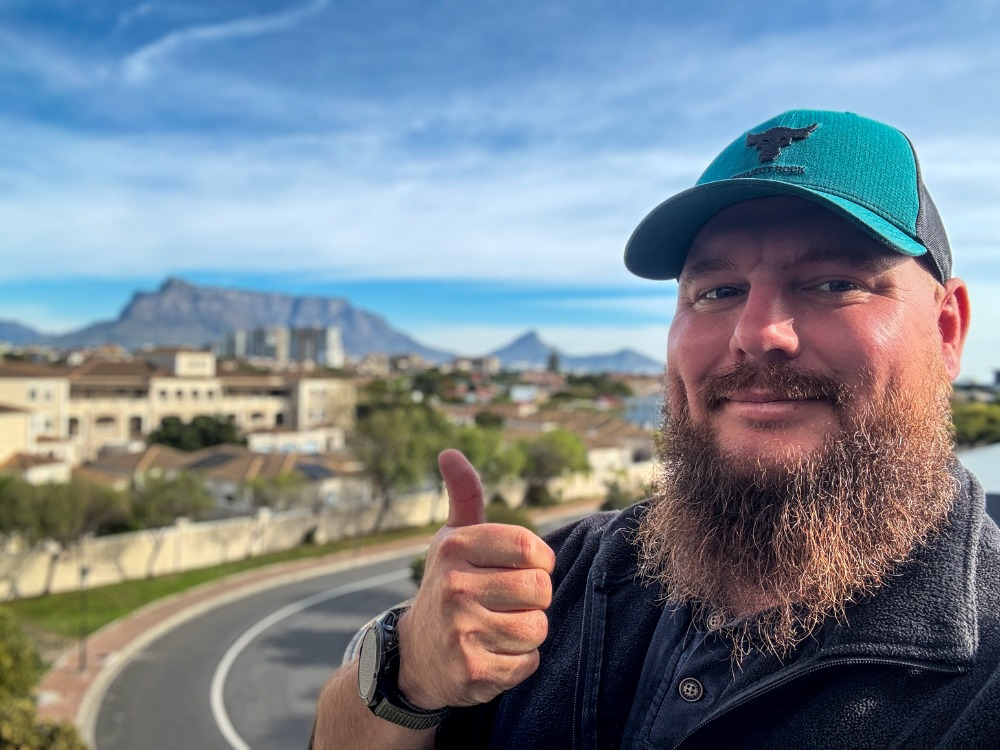

Applied AI engineer building practical AI systems for software teams.

Designed and rolled out AI PR reviews across Azure DevOps and GitHub Copilot: schema-validated output, severity gating, advisory-to-enforced rollout, kill-switches, cost telemetry. Hundreds of repositories · thousands of reviews per month.
Unified support toolkit (CLI + REST API), VS Code chat participant, Atlassian assistant, Kafka AI deployment workflow - runbook, log, and deployment triage in the developer workspace.
Production-grade Azure DevOps to GitHub migration platform - open source, enterprise-scale. Playwright + local vision-model automation of a ~3,400-game casino catalog, unattended.
Hadeda Havoc, Fettle, izwi, PowerMeter, ShotKit - thirteen consumer products built solo: a paid iOS App Store game, iOS/Android apps, and live web apps. Rooted in years of SDET / Senior SQA work.
Schema-validated, build-pipeline-native, governance-first.
Playwright + a local vision model: est. 5-7 person-weeks of manual catalog work per refresh, done in 2-3 days unattended.
CLI + API for health, deployment, logs, and runbooks.
Inventory, freeze, mirror, parity proof, audit trail.
Thank you for reading - I'd welcome a conversation about how my experience could fit your team.
🌐 https://www.stewart-burton.com